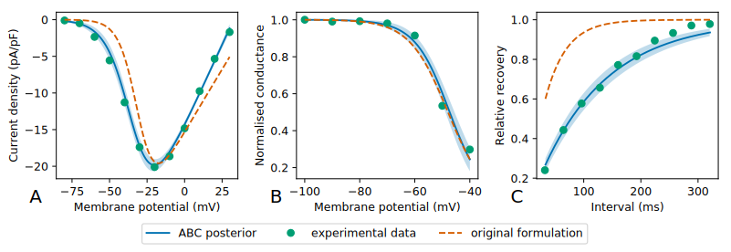
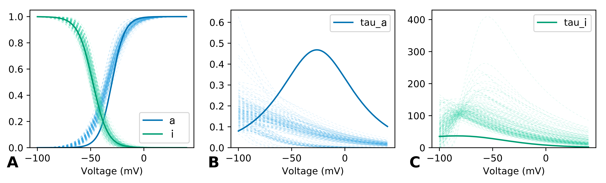
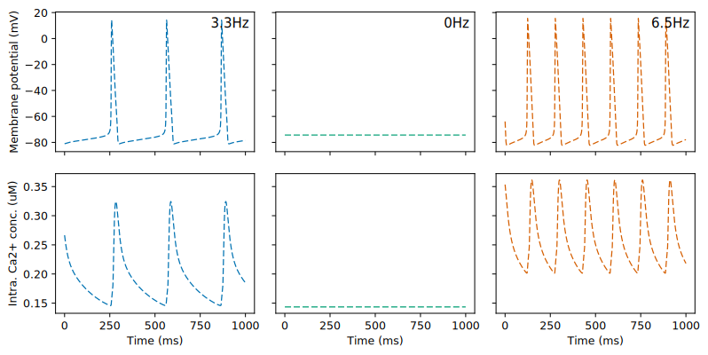
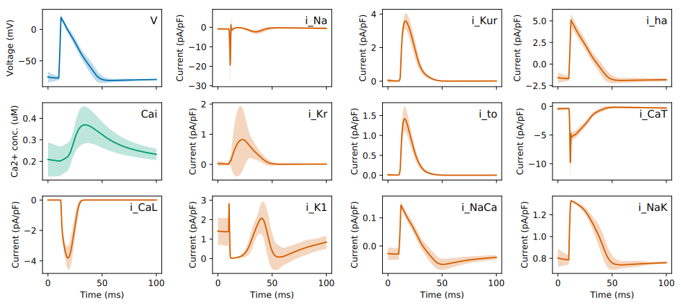
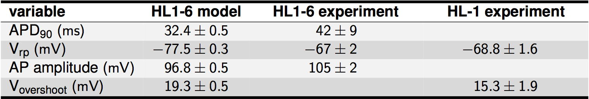

Traditional fitting methods do not account for uncertainty in estimates.
Approximate Bayesian Computation (ABC) produces posterior distribution for each parameter.
Hypothesis
The ABC approach can be used to construct a validated mathematical model of the action potential of a HL1-6 cell while taking into account uncertainties in parameter estimates arising from insufficient fitting data, biological variability and/or parameter redundancy.
Aims
Develop an ABC implementation to estimate parameter posterior distributions for individual ion currents.
Investigate the sources of any uncertainty and unidentifiability in parameter estimates.
Construct the full action potential model and validate with action potential recordings from biological experiments.
Aim 1: Parameterising ion currents using ABC
ABC outperformed traditional maximum likelihood estimation, and provides uncertainty in simulation output.

ABC vs Maximum Likelihood fitting of T-type Calcium current: A = activation, B = inactivation, C = recovery.
Aim 2: Investigating unidentifiabilities
Time constant curves could not be constrained by standard protocol patch clamp data.

Underlying variables in ion current equations with ABC parameter posteriors: A = steady-state, B = activation time constant, C = inactivation time constant.
Aim 3: Full action potential model
Automaticity in 56% of runs with mean firing rate 4.9±2.0 Hz.
Comparable qualitative action potential and Calcium transients between simulations and experiments.

Aim 3: Initial validation


Conclusions
ABC is an effective approach to infer model parameters while accounting for uncertainties and/or unidentifiabilities.
Standard protocol voltage patch clamp data is not sufficient to completely constrain time constant parameters.
The full action potential model reproduces qualitative and quantitative characteristics of the HL1-6 myocyte.